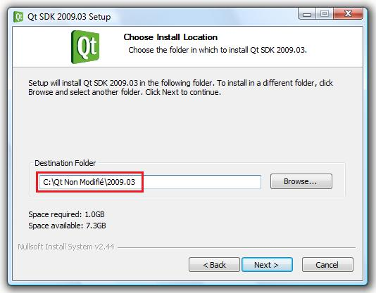
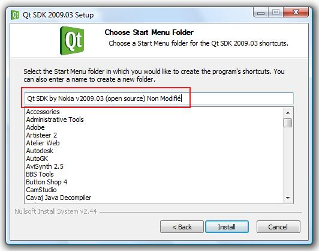

La compilation en mode statique permet d'éliminer la dépendance des DLL lors de l'exécution de vos applications, c'est-à-dire que les DLL ne seront plus nécessaires pour lancer vos applications créées avec Qt.
Vous vous êtes peut-être déjà demandé pourquoi vos applications compilées (*.exe) nécessitent-elles des DLL (mingwm10.dll, QtGui4.dll, QtCore4.dll) pour fonctionner ? Cela est très simple, lorsque vous développez une application avec Qt, à chaque fois que vous utilisez un widget, vous faites appel à des classes qui ont été écrites par les développeurs de la bibliothèque Qt. Tous les widgets de Qt ne sont pas des éléments natifs du C++, c'est pourquoi il faut les intégrer dans vos projets. C'est ce que l'on fait avec les include, par exemple :
#include <QtGui>
Toutes ces classes sont ainsi contenues dans les différentes DLL. Lors d'une compilation dynamique, c'est le compilateur qui fait le lien entre ces DLL et les différents widgets, méthodes et attributs utilisés dans le code source.
La compilation en mode statique permet ainsi d'intégrer ces classes directement dans le fichier *.exe dispensant ainsi la nécessité des DLL pour vos applications, contrairement à la compilation en mode dynamique (compilation nécessitant les DLL).
Comme beaucoup de solutions, cela a des avantages et des inconvénients. L'avantage majeur de ce mode de compilation est bien évidemment le fait que vous pourrez distribuer vos applications sans fournir les DLL.
Le désavantage est que ce mode de compilation peut poser problème pour la création de plugins qui sont développés dans une version plus récente de Qt que celle utilisée lors de la compilation du programme principal.
Quoi qu'il en soit, je trouve que ce mode de compilation est très bien adapté pour des applications légères. Il est évident que si vous envisagez d'utiliser un assistant d'installation pour votre application, ce mode de compilation n'a aucun intérêt.
Vous devez normalement savoir que Qt est sous licence LGPL, cela signifie entre autre que vous êtes en droit de développer des logiciels à but lucratif ou non sans distribuer les codes sources.
Cependant, il est important de souligner que vous êtes dans l'obligation de distribuer les codes sources de vos applications avec celles-ci si vous les compilez en mode statique.
Dans le cas contraire, une licence commerciale de Qt est nécessaire.
Cependant, certaines versions semblent fonctionner, à savoir : Qt 2009.05 (4.6.0), Qt 2010.04 (4.6.3).
Avant de pouvoir compiler vos applications en mode statique, il faut commencer par compiler Qt en mode statique.
Le meilleur compromis est alors d'installer une deuxième version de Qt dans un dossier différent. Cela permet d'utiliser une version pour compiler des projets en mode statique et l'autre pour compiler des projets en mode dynamique.
Voici les étapes à suivre pour compiler Qt en mode statique.
1. Démarrez « Qt Command Prompt » comme d'habitude.
Setting up a MinGW/Qt only environment...
-- QTDIR set to C:\Qt\2009.03\qt
-- PATH set to C:\Qt\2009.03\qt\bin
-- Adding C:\Qt\2009.03\bin to PATH
-- Adding C:\WINDOWS\System32 to PATH
-- QMAKESPEC set to win32-g++
C:\Qt\2009.03\qt>
2. Tapez ceci : « configure -static », puis validez (cette étape devrait durer environ 30 minutes).
Setting up a MinGW/Qt only environment...
-- QTDIR set to C:\Qt\2009.03\qt
-- PATH set to C:\Qt\2009.03\qt\bin
-- Adding C:\Qt\2009.03\bin to PATH
-- Adding C:\WINDOWS\System32 to PATH
-- QMAKESPEC set to win32-g++
C:\Qt\2009.03\qt>configure -static
Le message suivant s'affiche :
C:\QtDynamique\2009.03\qt>configure -static
Which edition of Qt do you want to use ?
Type 'c' if you want to use the Commercial Edition.
Type 'o' if you want to use the Open Source Edition.
Normalement vous utilisez la version gratuite open source, donc tapez « o » pour open source, puis validez.
C:\QtDynamique\2009.03\qt>configure -static
Which edition of Qt do you want to use ?
Type 'c' if you want to use the Commercial Edition.
Type 'o' if you want to use the Open Source Edition.
o
Un nouveau message s'affiche, celui de la licence de Qt vous demandant de valider la licence :
C:\QtDynamique\2009.03\qt>configure -static
Which edition of Qt do you want to use ?
Type 'c' if you want to use the Commercial Edition.
Type 'o' if you want to use the Open Source Edition.
o
This is the Qt for Windows Open Source Edition.
You are licensed to use this software under the terms of
the GNU General Public License (GPL) version 3
or the GNU Lesser General Public License (LGPL) version 2.1.
Type '3' to view the GNU General Public License version 3 (GPLv3).
Type 'L' to view the Lesser GNU General Public License version 2.1 (LGPLv2.1).
Type 'y' to accept this license offer.
Type 'n' to decline this license offer.
Do you accept the terms of the license?
Pour valider la licence, tapez « y » puis validez.
Do you accept the terms of the license?
y
Setting Direct3D to NO, since the proper Direct3D SDK was not detected.
Make sure you have the Direct3D SDK installed, and that you have run
the <path to SDK>\Utilities\Bin\dx_setenv.cmd script.
The D3D SDK library path *needs* to appear before the Platform SDK library
path in your LIB environment variable.
All the required DirectShow/Direct3D files couldn't be found.
Make sure you have either the platform SDK AND the DirectX SDK or the Windows SD
K installed.
If you have the DirectX SDK installed, please make sure that you have run the <p
ath to SDK>\SetEnv.Cmd script.
La configuration de Qt pour le mode statique commence.
3. Une fois l'étape précédente terminée, le message suivant s'affiche dans la console disant que l'on peut désormais lancer la compilation avec « mingw32-make ».
Reading C:/QtDynamique/2009.03/qt/demos/chip/chip.pro
Reading C:/QtDynamique/2009.03/qt/demos/embeddeddialogs/embeddeddialogs.pro
Reading C:/QtDynamique/2009.03/qt/demos/undo/undo.pro
Reading C:/QtDynamique/2009.03/qt/demos/boxes/boxes.pro
Reading C:/QtDynamique/2009.03/qt/demos/arthurplugin/arthurplugin.pro
Reading C:/QtDynamique/2009.03/qt/demos/sqlbrowser/sqlbrowser.pro
Reading C:/QtDynamique/2009.03/qt/demos/qtdemo/qtdemo.pro
Reading C:/QtDynamique/2009.03/qt/demos/browser/browser.pro
Reading C:/QtDynamique/2009.03/qt/tools/qdoc3/qdoc3.pro
Qt is now configured for building. Just run mingw32-make.
To reconfigure, run mingw32-make confclean and configure.
C:\QtDynamique\2009.03\qt>
Il faut alors taper ceci : « mingw32-make sub-src », puis valider (cette étape est beaucoup plus longue, il faut compter environ 4 heures).
Dans les deux cas, avant de lancer la commande « mingw32-make », il faut ouvrir les fichiers « Makefile » et désactiver l'option multithread en supprimant « -mthreads » à chaque occurrence. Cela permet d'éliminer la dépendance de la DLL « mingwm10.dll » qui gère le multithread (option -mthread), tout en sachant que si vous désactivez cette option, il ne sera plus possible d'utiliser la classe QThread dans vos applications.
Si vous utilisez donc QThread dans vos applications, mieux vaut compiler en mode dynamique, car vous serez de toute façon obligés de garder la DLL « mingwm10.dll ».
Voici un exemple du début d'un fichier « Makefile » :
Une fois que vous avez compilé votre application en mode statique, vous obtenez normalement un unique *.exe (si votre application ne nécessite aucune autre DLL indépendante de Qt).
Cet exécutable doit certainement avoir une taille d'environ 10 Mo.
En utilisant UPX, un logiciel de compression pour exécutable, il est possible de diminuer la taille de l'exécutable à environ 3 Mo.
Le principe général d'un logiciel tel que UPX est de rechercher les redondances (code répété plusieurs fois) de codes hexadécimaux dans le fichier à compresser, et de les remplacer par un code plus « concis » quand l'opération est possible. Lors de la compression d'un programme avec UPX, celui-ci va intégrer une partie de code appelé le loader et modifier l'Original Entry Point (offset où démarre le code du logiciel) vers ce loader pour que ce soit lui qui se charge en premier lors du lancement du programme. Le loader dispose de la routine de « décryptage » pour décompresser le code du logiciel ; une fois la routine terminée, le logiciel sera complètement décompressé dans la RAM (mémoire vive) et le logiciel fonctionnera comme auparavant, comme si la compression avec UPX n'avait jamais eu lieu. Vous constaterez donc le désavantage principal de la compression : c'est le temps d'exécution du logiciel (augmenté par la routine de décryptage) au détriment de la taille du .exe (diminuée par la compression).
Rassurez-vous, il est presque impossible de voir la différence du temps d'exécution avec un fichiers de 10 Mo. Effectivement, si vous compressez un exécutable de 200 Mo, ce temps ne sera plus négligeable. De plus, le temps d'exécution intervient uniquement au démarrage du logiciel ; une fois lancé, il n'y aucune différence entre un exécutable compressé ou non.
Avant de compresser votre exécutable avec UPX, la taille de celui-ci peut être diminuée de quelques kilooctets grâce à la fonction "strip" contenu dans le compilateur mingw32.
Cette fonction a pour effet de supprimer tous les symboles et sections inutiles de l'exécutable.
Voici comment l'utiliser :
1. démarrer "Qt Command Prompt" et rendez vous dans le dossier où se trouve votre exécutable;
2. tapez « strip -s votrefichier.exe »;
3. patientez quelques instants que l'opération soit effectuée, les modifications sont directement apportées sur l'exécutable d'origine.
Ensuite voici les étapes à suivre pour compresser votre exécutable avec UPX :
2. copiez l'exécutable non compressé dans le dossier d'UPX ;
3. lancez une fenêtre de commandes DOS (Démarrer -> Exécuter -> cmd) ;
4. tapez « cd chemindudossierUPX » puis validez.
Par exemple :
C:\Users\Zero>cd C:\upx
5. Puis tapez la commande suivante :
C:\upx>upx --best votrefichier.exe
La compression débute alors.
C:\upx>upx votrefichier.exe
Ultimate Packer for eXecutables
Copyright (C) 1996 - 2009
UPX 3.04w Markus Oberhumer, Laszlo Molnar & John Reiser Sep 27th 2009
File size Ratio Format Name
-------------------- ------ ----------- -----------
Compressing votrefichier.exe [win32/pe, NRV2E/7]
[*************************************...........................] 33.1% |
Une fois la compression finie, vous pouvez fermer la fenêtre cmd. Votre exécutable est désormais compressé et directement utilisable sans DLL et avec une taille réduite.
Je vous rappelle que le but de faire cohabiter deux installations de Qt sur le même système d'exploitation permet d'avoir une version pour la compilation en mode statique et une autre pour la compilation en mode normal.
En considérant que vous ayez déjà une version de Qt installée qui compile maintenant en mode statique, il faudra suivre les étapes suivantes pour en installer une deuxième.
1. Téléchargez la dernière version de Qt sur le site officiel : http://qt.nokia.com/downloads et choisissez la version SDK LGPL.
2. Démarrez l'assistant d'installation et laissez les paramètres par défaut jusqu'à cet écran :

À cet endroit, modifiez le dossier d'installation afin que cette nouvelle version de Qt soit installée dans un dossier différent.

N'oubliez pas de changer le nom à l'étape suivante afin qu'il n'y ait pas de doublons dans le menu « Démarrer ».
Vous pouvez ensuite valider et l'installation débute.
Une fois l'installation finie, vous retrouverez les différents raccourcis des deux versions de Qt dans le menu « Démarrer ».
Vous pourrez désormais distribuer vos applications Qt sans DLL tout en diminuant leur taille.